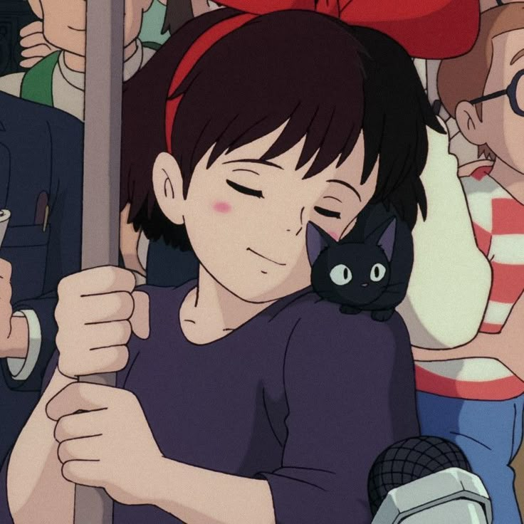

Behavioral Economics
- Main Page 
Emotional Anchoring & Nostalgia
Ghibli drives irrational consumer loyalty even when cheaper substitutes exist
Scarcity
69M USD (Merch); From an interview, cofounder Suzuki revealed that he is often asked why Ghibli films aren't distributed on Netflix and other streaming sites.
© 2025 Isabella Li Economics Final Project